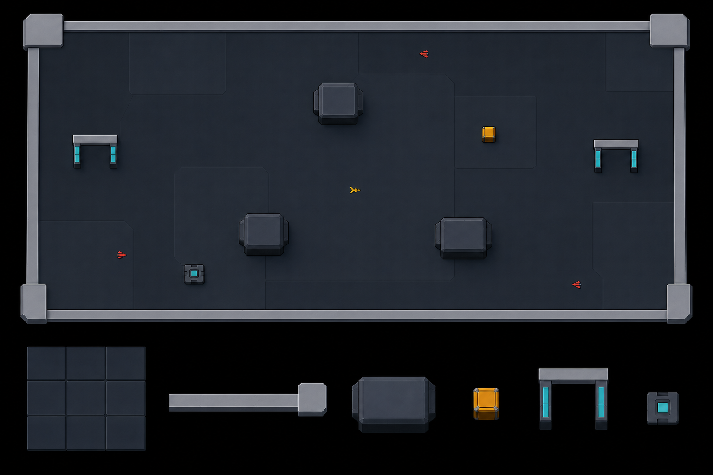
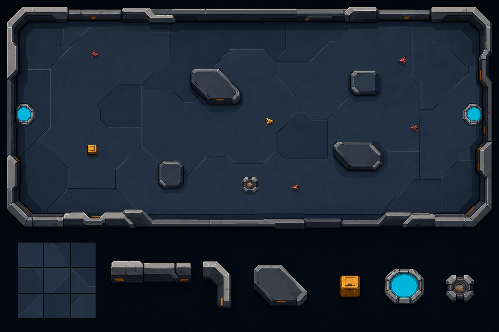
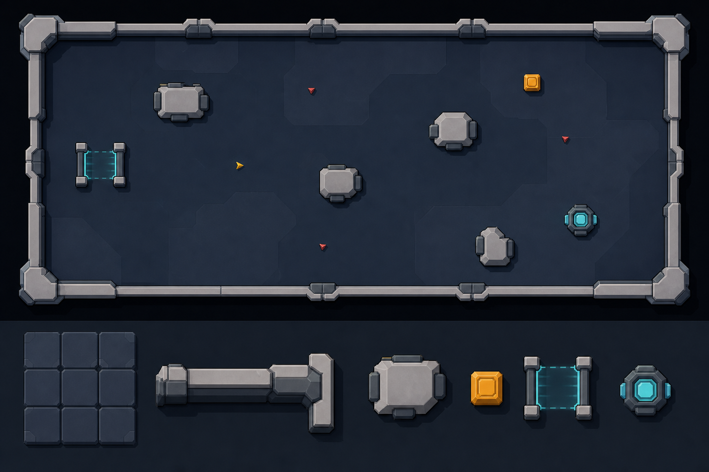

1 · Problem
Busy and unclear
- The floor repeats too loudly.
- Outer wall and inner cover look too similar.
- Closed pockets and standing pads fight fast movement.
Map
The map needs fewer visual parts, safer random placement, and no reason to stand still.
1 · Problem
2 · Fix
3 · Decided
4 · Your choice
Choose each map part from A, B, or C below. Mixing is allowed.
Current game
The repeated floor blocks are louder than the ships and items. The inner shapes also make closed pockets.

Review-only art
Top: a full map. Bottom: floor repeat, outer wall, inner cover, box, gate, and shared-danger device.

Calm blocks. The lowest detail and the quietest floor.
Open full image →
Angled cuts. Simple shapes with a faster direction.
Open full image →
Heavy contrast. Fewer shapes with stronger edges.
Open full image →I will handle this
The fixed electric strip stays one danger. The floor that cracks and later hurts stays another. They share fair warnings, but they do not become one object and they do not move.
Break one device to pull enemies. Break another to freeze nearby enemies. A moving meteor attacks both sides on a fully shown path.
{kind=link}
{kind=link}
{kind=link}